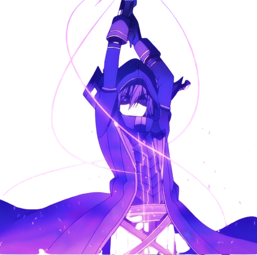
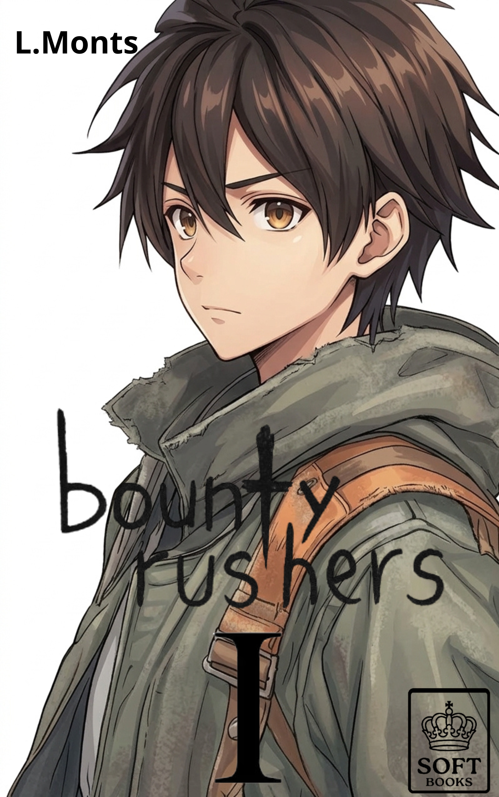

NOVA PUBLICAÇÃO
Seirei Gensouki comemora 11 anos
Série de light novels recebe nova temporada e também será publicada no NovelHub. Acompanhe a jornada de Rio e seus amigos conosco!
Ler Volume 1 →Acompanhe os lançamentos, destaques e projetos que estão chegando à biblioteca.
Série de light novels recebe nova temporada e também será publicada no NovelHub. Acompanhe a jornada de Rio e seus amigos conosco!
Ler Volume 1 →
Cid Kagenou e o Shadow Garden esperam por você em The Eminence in Shadow — Volume 1.
Explorar volume →Conheça a jornada de Lena e Shin no Volume 1 de 86 — Eighty Six.
Ler Volume 1 →
O reboot da famosa novel Bounty Rush: ORIGIN será publicado oficialmente pela NovelHub em parceria com a SOFT BOOKS.
Ver projeto →